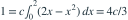

密度为 （ ），区间外为零。常数
），区间外为零。常数  为多少？
为多少？
），区间外为零。常数 为多少？- A
- B
- C

- D

我已思考，展开答案与解析
正确答案：A

，故 。
易错提醒密度的积分为 1，密度在一点的值不必小于 1。
数学三·概率统计基础专题 · 数学三概率统计基础专题·原创第9题
按数学三常见概率统计知识点原创；不是历年真题或教材原题。
），区间外为零。常数 为多少？
，故 。数学三·概率统计基础专题 · 数学三概率统计基础专题·原创第9题
按数学三常见概率统计知识点原创；不是历年真题或教材原题。